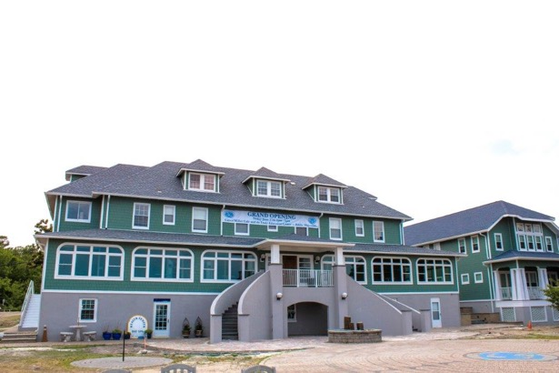
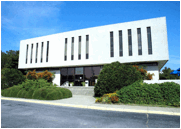
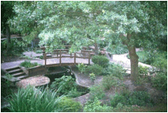

关于A.R.E.

A.R.E.历史性的医院大楼和石头迷宫
埃德加·凯西（1877-1945）于1931年创立了非赢利机构埃德加•凯西研究和启示协会（A.R.E.），以探索灵性、整体健康、直觉、解梦、心灵发展、轮回和古老的秘密，所有这些主题频繁出现在凯西超过14000次的解读中。
A.R.E.的使命是帮助人们转变生活方式，使生活更美好。通过研究、教育和应用凯西解读及同类材料中的核心概念，力求彰显上帝和众人之爱、提升生活的目的性、上帝的合一性、人类的精神本质以及体、智、灵的结合。A.R.E. 国际总部设在弗吉尼亚州的弗吉尼亚海滩，地区总部设在休斯敦，而区域代表遍布全美。A.R.E.在世界37个国家设立了埃德加•凯西中心，个人会员来自于70多个国家。A.R.E.社区是一个全球性的个体网络。

A.R.E.参观者；会议中心
A.R.E.出版部门 A.R.E.出版社, 自1931年开始出版书籍，之后扩展到以DVD、CD、电子书、和数字媒体为载体进行出版。2009年，协会创立了四维出版社（4th Dimension Press），以提供额外的类似材料。个人几乎可以在所有书店或登录ARECatalog.com在线购买A.R.E.出版社/四维出版社的产品。

A.R.E.冥想园
A.R.E. 也和 大西洋大学有联系, 可提供继续教育课程，拥有超个人研究的研究生点，其 凯西/赖利按摩疗法学院, 在整体健康教育和医疗保健方面处于领先地位。在弗吉尼亚海滩的A.R.E.总部拥有一个健康水疗中心, 除按摩疗法外，该中心还提供凯西健康解读中提到的诸多疗法。
更多信息请登录 www.EdgarCayce.org.